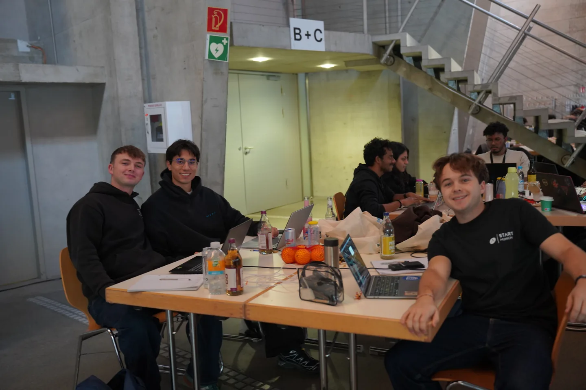
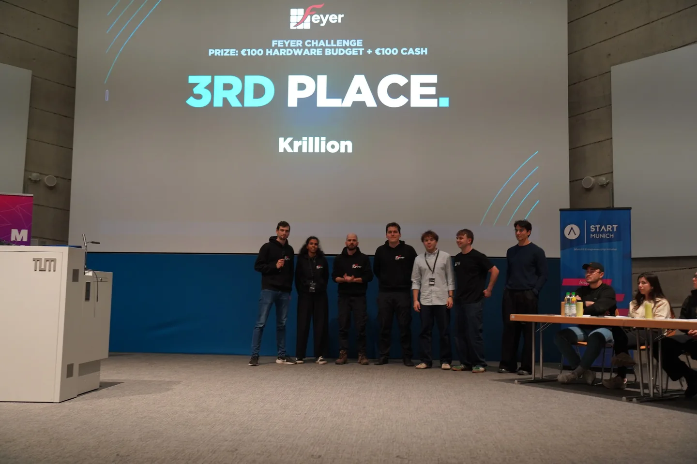

START Hack Munich · November 2026
Faster Physics with Feyer.ai
At the Technical University of Munich, I joined Team Krillion to speed up the optical simulations used to design gravitational-wave detectors.

The challenge
Feyer uses AI and physics simulators to search for new hardware designs. Its Faster Physics challenge centred on Differometor, a Python and JAX simulator. For a given arrangement of mirrors and other optical components, it predicts how sensitive a detector will be and how that sensitivity changes when a design parameter moves.
Our task was to cut the time for one complete evaluation, including setup and compilation. We had to keep all 101 frequencies, calculate gradients for all 193 design variables, and reproduce the reference results in double precision.
Reusing one matrix factorisation
At each frequency, the optical signal and the detector’s response to noise depend on the same system matrix. We factored that sparse matrix once and reused its factors for both solves. We also rewrote the quantum-noise calculation so that the detector variance could be read directly from the noise covariance and the detector response. That eliminated another solve.
We moved the solver into a native C++ engine. Its Gilbert–Peierls algorithm builds the sparse LU factors one column at a time, skipping entries that cannot contribute. We reused the factors again when calculating gradients and checked the sensitivity curve and gradients against the original simulator.
Benchmark and award
Our final engine completed the original benchmark in 0.52 seconds on one CPU core. For a separate test, we called the C++ engine directly from Python, avoiding JAX startup and compilation. That run took about 0.20 seconds. In our presentation, we compared it with the 58.9-second baseline and reported a speedup of more than 293×.
We placed third in the Feyer challenge and received a €300 cash prize as a team.

Team presentation
In A Krillion Times Faster, we walk through the matrix solves and show how each change affected runtime.